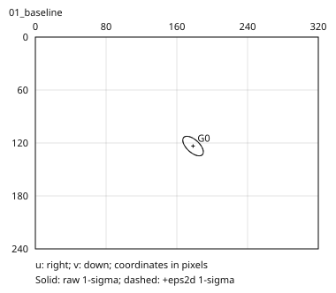
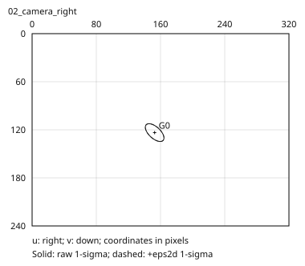
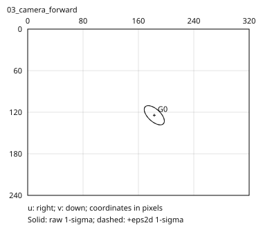
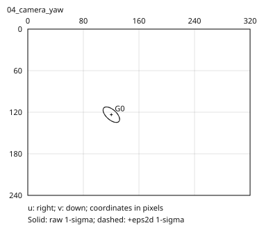
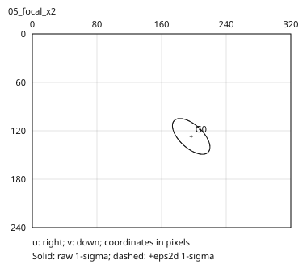
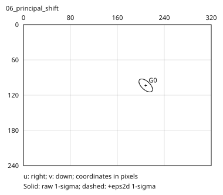
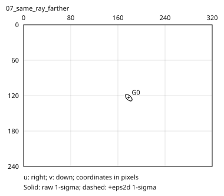
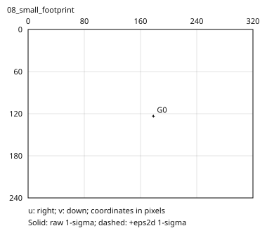
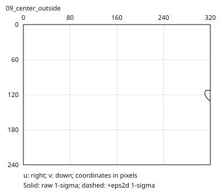
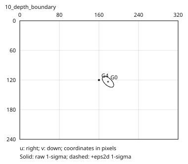

实线是 raw 协方差的 1-sigma 等值轮廓。虚线是加 eps2d 后的轮廓。 两者都不是硬边界、最终像素 alpha、3DGS 包围半径或可见性结论。
每张图使用相同像素坐标和图像尺寸。画框裁剪仅发生在显示阶段，浮点投影值不会被裁剪。 深度无效项保留在 NPZ/CSV 中。原始 signed Z 不被改成正值。
projection_stats.csv · experiment_report.json
Baseline: fixed world covariance; identity OpenCV c2w.

Camera center moves +0.35 along world X; scene stays fixed.

Camera center moves +0.60 along world Z; scene stays fixed.

Camera c2w rotates +15 degrees about world Y; center stays fixed.

Double fx and fy only. Image size and principal point stay fixed.

Shift cx +30 and cy -20 only. Same focal lengths and scene.

Double all three coordinates of the world mean; covariance unchanged.

Divide world covariance by 400; inspect raw versus +0.3 pixel^2.

Positive depth, center outside image. This is not a visibility test.

Mixed signed Z: valid, behind, zero, at near, just beyond near.
